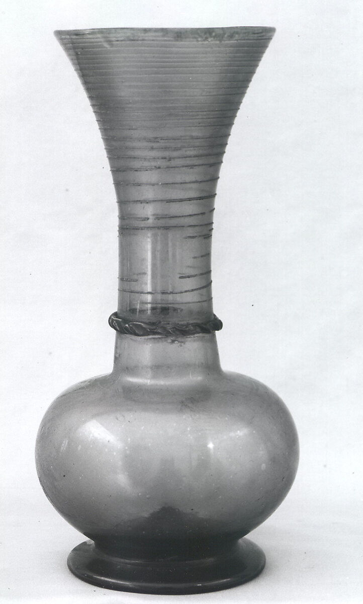

a poem
|
2026
translated by an /a)ppar/i)tion
falling
in two:
I am
|
but, so be it.
orbit
ghost in the loop
unthinking.photography
The Photographers' Gallery
Press Enter to accept assumptions
Prone to mistakes due to bias